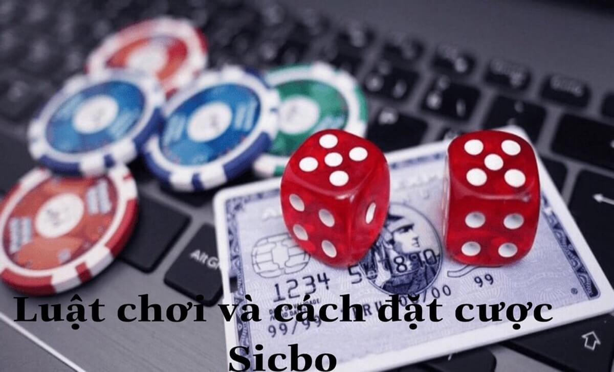

Home – Casino trực tuyến Sbotop –Sicbo là gì? Cách chơi Sicbo trực tiếp tại Sbotop
SICBO LÀ GÌ? CÁCH CHƠI SICBO TRỰC TIẾP TẠI SBOTOP
Sicbo là một trò chơi cờ bạc phổ biến ở các sòng bạc trực tuyến và truyền thống với nhiều loại cược khác nhau, từ cược đơn giản như lớn nhỏ, chẵn lẻ, đến cược phức tạp Đây là cổng game trò chơi hấp dẫn và thú vị, mang lại cảm giác hồi hộp và kịch tính cho người chơi. Ngay sau đây, chúng tôi sẽ hướng dẫn cách chơi Sicbo trực tiếp tại Sbotop để anh em cùng tham khảo nhé!
Giới thiệu trò chơi Sicbo là gì?
Giới thiệu trò chơi Sicbo là gì?
Sicbo là một trò chơi cờ bạc có lịch sử lâu đời, được cho là xuất hiện từ thời nhà Hán ở Trung Quốc. Trò chơi này được truyền bá rộng rãi ở các nước châu Á, châu Âu, và châu Mỹ, và được nhiều người yêu thích bởi sự đơn giản và dễ chơi.
Sicbo có nghĩa là “xí ngầu bóc”, chỉ việc lắc ba viên xí ngầu trong một cái chén hoặc một cái lồng và bóc ra để xem kết quả. Người chơi sẽ đặt cược vào các kết quả có thể xảy ra, như tổng điểm của ba viên xí ngầu, số lượng xí ngầu có cùng mặt, hoặc một số cụ thể nào đó.
Nếu kết quả trùng khớp với cược của người chơi, người chơi sẽ thắng và nhận được tiền theo tỷ lệ cược tương ứng, ngược lại người chơi sẽ thua và mất tiền cược.
Luật chơi và cách đặt cược Sicbo
Luật chơi và cách đặt cược Sicbo
Luật chơi Sicbo khá đơn giản và dễ hiểu. Trước khi bắt đầu mỗi ván chơi, người chơi sẽ chọn loại cược mà mình muốn đặt và đặt số tiền cược tương ứng vào ô cược trên bàn chơi. Sau đó, người điều khiển trò chơi sẽ lắc ba viên xí ngầu trong một cái chén hoặc một cái lồng và bóc ra để công bố kết quả.
Người chơi sẽ so sánh kết quả với cược của mình và xem mình có thắng hay thua. Có nhiều loại cược khác nhau trong Sicbo, mỗi loại có tỷ lệ cược và khả năng thắng khác nhau. Một số loại cược phổ biến nhất như cược lớn nhỏ, cược chẵn lẻ, cược tổng điểm, cược hai, ba số/ bất kỳ giống nhau, cược một số cụ thể.
Hướng dẫn cách chơi Sicbo trực tiếp tại Sbotop
Hướng dẫn cách chơi Sicbo trực tiếp tại Sbotop
Ngay sau đây, chúng tôi sẽ hướng dẫn cách chơi Sicbo trực tiếp tại Sbotop mà bất kỳ bet thủ nào cũng đều thực hiện được:
Mở tài khoản Sbotop

Mở tài khoản Sbotop
Đầu tiên, bạn cần truy cập vào trang chủ của Sbotop và nhấn vào nút “Đăng ký” ở góc trên bên phải của trang. Trong đó bạn cần điền các thông tin cơ bản theo yêu cầu và chọn “gửi”.
Bạn sẽ nhận được một email xác nhận đăng ký Sbotop, trong đó có một đường dẫn để kích hoạt tài khoản của bạn. Anh em cần nhấn vào đường dẫn đó để hoàn tất việc mở tài khoản.
Đăng nhập và nạp tiền vào tài khoản
Sau khi kích hoạt tài khoản thành công, bạn cần đăng nhập vào tài khoản của mình bằng cách nhấn vào nút “Đăng nhập” ở góc trên bên phải của trang chủ Sbotop và nhập user và mật khẩu của mình.
Sau khi đăng nhập SBOTOP, bạn cần nạp tiền vào tài khoản để có thể chơi cá cược tại Sbotop. Để nạp tiền, bạn nhấn vào nút “Nạp tiền” ở góc trên bên phải của trang và chọn phương thức nạp tiền SBOTOP mà bạn muốn sử dụng.
Người chơi cần nhập thông tin cá nhân cùng số tiền mà bạn muốn nạp và xác nhận giao dịch.
.jpg)
Nạp tiền vào Sbotop
Bắt đầu chơi cá cược tại cổng Sicbo
Giờ đây, bạn đã sẵn sàng để bắt đầu chơi cá cược tại cổng Sicbo của Sbotop. Bạn nhấn vào nút “Casino” ở thanh menu trên cùng của trang và chọn “Sicbo” trong danh sách các trò chơi casino trực tuyến.
Ngay lập tức sẽ được chuyển đến một trang mới, trong đó bạn sẽ thấy nhiều bàn chơi Sicbo trực tiếp với các mức cược khác nhau, từ thấp đến cao.
Vào cổng game Sicbo
Để chơi cá cược, bạn cần chọn số tiền cược mà bạn muốn đặt bằng cách nhấn vào các đồng xu có giá trị khác nhau ở góc dưới bên trái của màn hình. Sau đó, bạn kéo và thả đồng xu đó vào ô cược mà bạn muốn đặt trên bảng cược.
Bạn có thể đặt nhiều cược khác nhau trong một ván chơi, miễn là không vượt quá số tiền cược tối đa của bàn chơi. Bạn cũng có thể hủy bỏ cược của mình bằng cách nhấn vào nút “Hủy” ở góc dưới bên phải của màn hình.
Đặt cược Sicbo
Đó là những bước cơ bản để chơi Sicbo trực tiếp tại Sbotop. Chúc bạn chơi vui vẻ và may mắn! Nếu có bất kỳ vấn đề phát sinh nào hãy liên hệ SBOTOP để được giải đáp ngay nhé!